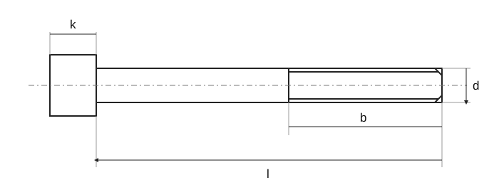

Šrouby

Šroub · rozměrové značky
| Značka | Význam |
|---|---|
| d | Jmenovitý průměr závitu |
| l | Jmenovitá délka |
| b | Délka závitu |
| k | Výška hlavy |
- Šrouby se šestihrannou hlavou
- Lícované šrouby
- Závrtné šrouby
- Šrouby s válcovou hlavou
- Zápustné šrouby
- Zápustné šrouby s kuželovou hlavou výrobní třídy A
- Zápustné šrouby s čočkovitou hlavou
- Zápustné šrouby s křížovou drážkou h nebo z, pevnost 4.8
- Zápustné šrouby s křížovou drážkou h nebo z, pevnost 8.8
- Zápustné šrouby do plechu s křížovou drážkou
- Zápustné šrouby s čočkovitou hlavou s křížovou drážkou
- Zápustné šrouby s vnitřním šestihranem
- Šrouby s půlkulatou hlavou
- Šrouby s hlavou T
- Upínací šrouby
- Stavěcí šrouby
- Stavěcí šrouby s drážkou a plochým koncem
- Stavěcí šrouby s drážkou a kuželovým důlkem
- Stavěcí šrouby s drážkou a čípkem
- Stavěcí šrouby s drážkou a hrotem
- Stavěcí šrouby s vnitřním šestihranem
- Stavěcí šrouby s vnitřním šestihranem a hrotem
- Stavěcí šrouby s vnitřním šestihranem a plochým koncem — DIN 913
- Stavěcí šrouby s vnitřním šestihranem a hrotem — DIN 914
- Stavěcí šrouby s vnitřním šestihranem a čípkem — DIN 915
- Stavěcí šrouby s vnitřním šestihranem a čípkem
- Otočné šrouby s okem
- Šrouby do zdiva a základů